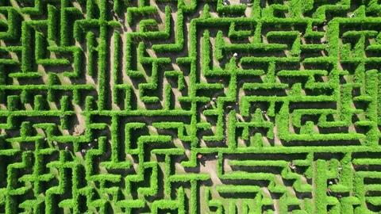

Mijn Projecten
Hier zijn enkele projecten waar ik tijdens mijn opleiding aan heb gewerkt. Deze projecten tonen mijn vermogen om problemen op te lossen en moderne webdesign principes toe te passen.
üéÆ Hoger Lager
Een interactieve game waarin spelers moeten raden welke object duurder is. Gemaakt met HTML, CSS en JavaScript.

üß© Maze Game
Een doolhofspel waarin de speler de uitgang moet vinden. Gemaakt met HTML, JavaScript en CSS.